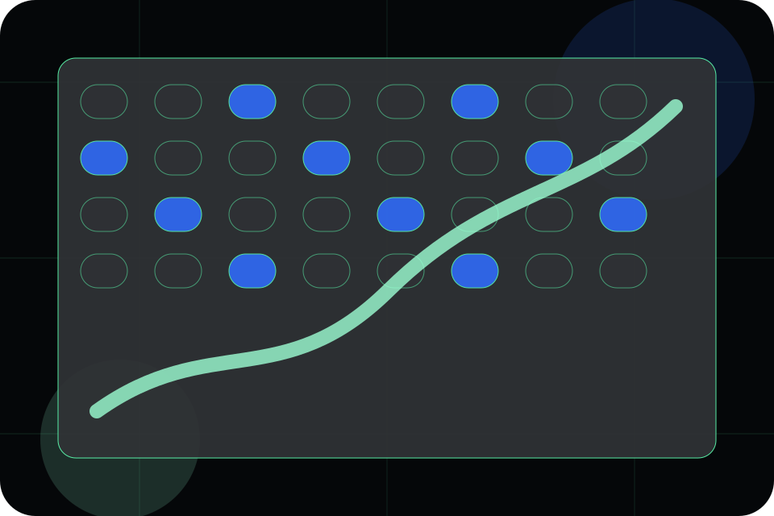
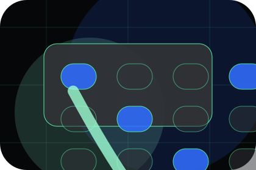
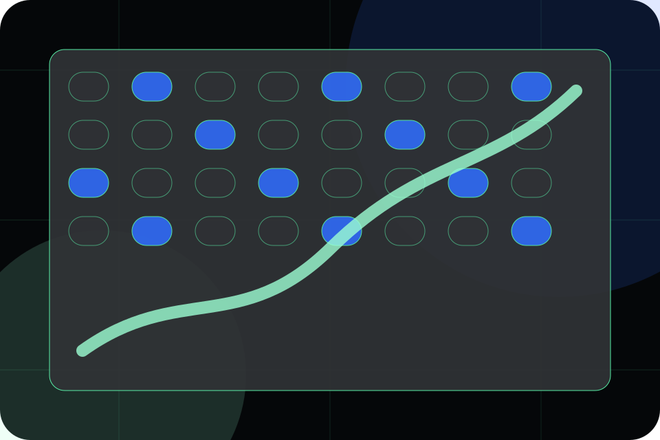
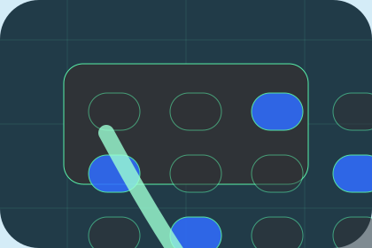

Details
What information helps Helix respond with a useful answer instead of a generic reply.
Contact / 01
Contact opens as a clear life sciences decision hub: what Helix offers, who it helps, why it matters, and which route to take first.
The first screen combines positioning, proof, primary action, and fast internal navigation, so people can act immediately or compare the rest of the contact route with context.
AI biology lab hero
Select the closest route and Helix keeps the next step, proof, and follow-up expectation aligned with evidence and scientific credibility.

Contact / 02
Science makes the contact path concrete: what to send, how the response works, and what Helix needs before visitors discuss the research fit.
The section reduces contact friction by naming the channel, expected detail, privacy path, and response expectation instead of dropping visitors into a generic form.
Discuss ResearchWhat information helps Helix respond with a useful answer instead of a generic reply.
How the visitor should think about response, urgency, location, or availability.
The expected next message keeps scope, timing, and the first practical step clear.
Contact / 03
Investors makes the contact path concrete: what to send, how the response works, and what Helix needs before visitors discuss the research fit.
The section reduces contact friction by naming the channel, expected detail, privacy path, and response expectation instead of dropping visitors into a generic form.
Discuss ResearchWhat information helps Helix respond with a useful answer instead of a generic reply.
How the visitor should think about response, urgency, location, or availability.
The expected next message keeps scope, timing, and the first practical step clear.
Contact / 04
Media makes the contact path concrete: what to send, how the response works, and what Helix needs before visitors discuss the research fit.
The section reduces contact friction by naming the channel, expected detail, privacy path, and response expectation instead of dropping visitors into a generic form.
Discuss ResearchWhat information helps Helix respond with a useful answer instead of a generic reply.
How the visitor should think about response, urgency, location, or availability.
The expected next message keeps scope, timing, and the first practical step clear.
AI biology lab hero
Select the closest route and Helix keeps the next step, proof, and follow-up expectation aligned with evidence and scientific credibility.
Contact / 05
Partners gives the proof layer for contact: standards, evidence, and reassurance that make the next decision feel grounded.
Instead of relying on vague claims, Helix presents visible standards, process cues, and proof artifacts that help life sciences visitors judge fit.
Discuss ResearchVisible proof that helps visitors believe the claims behind partners.
The quality, safety, or operating expectation this section makes explicit.

What becomes clearer before someone decides whether to discuss the research fit.
Contact / 06
Form makes the contact path concrete: what to send, how the response works, and what Helix needs before visitors discuss the research fit.
The section reduces contact friction by naming the channel, expected detail, privacy path, and response expectation instead of dropping visitors into a generic form.
Discuss ResearchHelix keeps form practical: send the key details, choose the right contact route, and know what kind of reply to expect.
Discuss Research
Contact / 07
Office makes the contact path concrete: what to send, how the response works, and what Helix needs before visitors discuss the research fit.
The section reduces contact friction by naming the channel, expected detail, privacy path, and response expectation instead of dropping visitors into a generic form.
Discuss ResearchHelix keeps office practical: send the key details, choose the right contact route, and know what kind of reply to expect.
Discuss ResearchContact / 08
Routing makes the contact path concrete: what to send, how the response works, and what Helix needs before visitors discuss the research fit.
The section reduces contact friction by naming the channel, expected detail, privacy path, and response expectation instead of dropping visitors into a generic form.
Discuss ResearchWhat information helps Helix respond with a useful answer instead of a generic reply.
How the visitor should think about response, urgency, location, or availability.
The expected next message keeps scope, timing, and the first practical step clear.
Contact / 09
Response makes the contact path concrete: what to send, how the response works, and what Helix needs before visitors discuss the research fit.
The section reduces contact friction by naming the channel, expected detail, privacy path, and response expectation instead of dropping visitors into a generic form.
Discuss ResearchWhat information helps Helix respond with a useful answer instead of a generic reply.
Contact / 10
Helix closes the contact route with a clear action, a quick reminder of the value, and a low-friction way to discuss the research fit.
Visitors who are ready can use the primary action. Visitors who are still comparing can scan the section links, proof, and support routes before they discuss the research fit.
Discuss ResearchThe final block keeps the choice simple: act now, compare one more proof route, or send enough detail for a focused response.
Discuss Researchevidence and scientific credibility
A research platform story built around AI discovery, phase tables, partner proof, and data-scale credibility. Contact ends with a direct path to discuss the research fit, plus enough context for visitors who still need to compare.

Discuss ResearchInformation is provided for planning and should be reviewed for the final client, location, and operating rules.